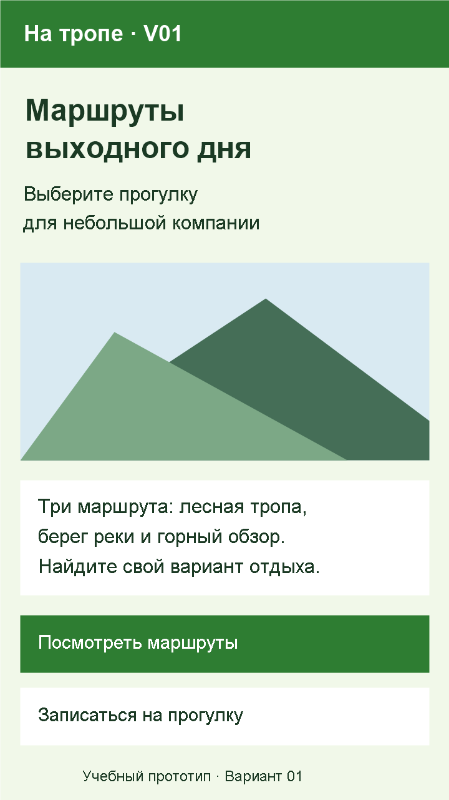
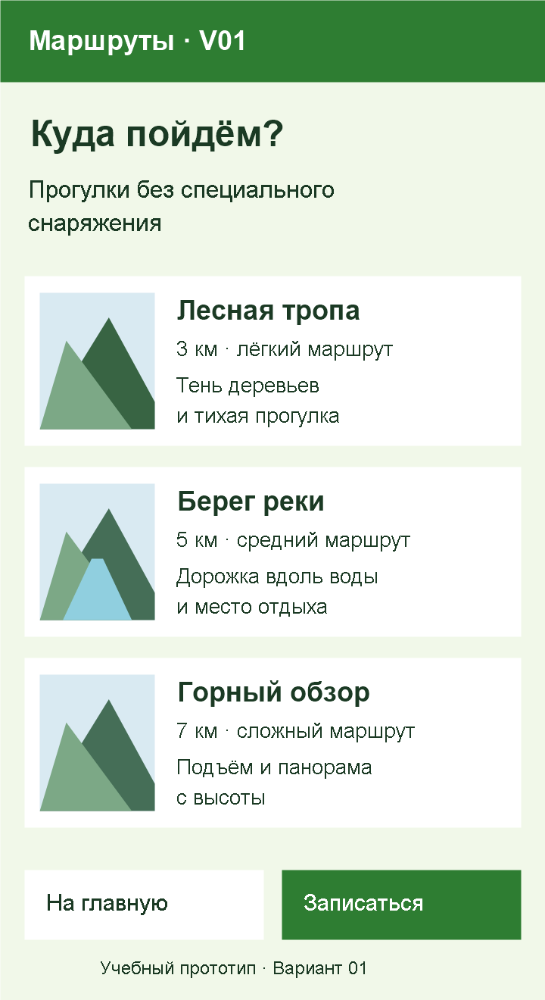
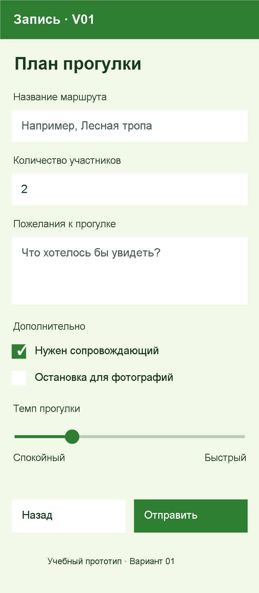
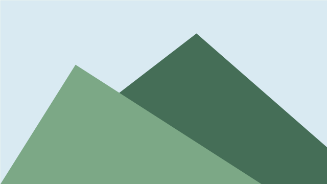

Вариант 01 — На тропе
Создайте в MIT App Inventor приложение о прогулочных маршрутах. Проект называется Variant01, название приложения — «На тропе · V01». Используйте только номер варианта; фамилия не требуется.
Это одно задание на две пары. На паре 6 соберите главный экран и каталог. На паре 7 завершите форму, подключите переходы и проверьте результат.
Макеты экранов
Ниже представлены три макета. На сайте переключайте их названиями экранов; в Obsidian макеты расположены друг под другом. Названия экранов в App Inventor указаны в заголовках и таблицах.



Макеты задают состав и расположение элементов. Отрисовка системных полей и кнопок на телефоне может немного отличаться. Изображения для компонента Image возьмите из набора ниже или выберите собственные по тем же сюжетам.
Общие требования
- Ровно три экрана:
Screen1,RoutesScreen,BookingScreen. - Фон всех экранов —
#F1F8E9; основной текст —#1B3A24. - Основные кнопки —
#2E7D32, текст на них —#FFFFFF. Второстепенные кнопки и поля — белые с тёмным текстом. - Заголовки экранов:
FontSize: 24,FontBold: true. Названия маршрутов:18, полужирные. Обычный текст:14–16. - Корневой
VerticalArrangementзанимает всю ширину экрана. Строки каталога и парные кнопки собраны вHorizontalArrangement. - Подпись «Учебный прототип · Вариант 01» присутствует на каждом экране.
- Компоненты имеют английские имена; надписи для пользователя — русские.
Label1иButton1переименуйте. - Текст не обрезается, компоненты не перекрываются, изображения сохраняют пропорции. Прокрутка формы допустима.
Первая пара: главный экран и каталог
Screen1
| Компонент | Имя | Текст или содержание |
|---|---|---|
Label |
LabelTitle |
Маршруты выходного дня |
Label |
LabelSubtitle |
Выберите прогулку для небольшой компании |
Image |
ImageCover |
Горный пейзаж; по ширине контейнера |
Label |
LabelIntro |
Три маршрута: лесная тропа, берег реки и горный обзор. Найдите свой вариант отдыха. |
Button |
ButtonRoutes |
Посмотреть маршруты |
Button |
ButtonBooking |
Записаться на прогулку |
Label |
LabelVariant |
Учебный прототип · Вариант 01 |
Расположите элементы сверху вниз. Обе кнопки занимают ширину контейнера и стоят друг под другом.
RoutesScreen
Заголовок LabelRoutesTitle — «Куда пойдём?». Пояснение LabelRoutesIntro — «Прогулки без специального снаряжения».
Соберите три строки. В каждой слева Image, справа — VerticalArrangement с тремя Label: названием, характеристикой и описанием.
| Строка | Название | Характеристика | Описание | Изображение |
|---|---|---|---|---|
| 1 | Лесная тропа | 3 км · лёгкий маршрут | Тень деревьев и тихая прогулка | Лес |
| 2 | Берег реки | 5 км · средний маршрут | Дорожка вдоль воды и место отдыха | Река |
| 3 | Горный обзор | 7 км · сложный маршрут | Подъём и панорама с высоты | Горы |
Имена строк: HorizontalArrangementRoute1, HorizontalArrangementRoute2, HorizontalArrangementRoute3. Для изображений — ImageRoute1–ImageRoute3. Для надписей первой строки — LabelRoute1Name, LabelRoute1Distance, LabelRoute1Description; остальные назовите аналогично.
Внизу в одном ряду разместите ButtonRoutesBack — «На главную» и ButtonRoutesBooking — «Записаться». Под ними — LabelRoutesVariant с номером варианта.
Промежуточный результат: сохранён проект с тремя экранами; главный экран и каталог готовы. Покажите их преподавателю.
Вторая пара: форма и общая навигация
BookingScreen
Заголовок LabelBookingTitle — «План прогулки». Перед каждым полем разместите отдельную видимую подпись, которая останется на экране после ввода текста.
| Компонент | Имя | Текст или свойство |
|---|---|---|
Label |
LabelRoutePrompt |
Название маршрута |
TextBox |
TextBoxRoute |
Hint: Например, Лесная тропа |
Label |
LabelCountPrompt |
Количество участников |
TextBox |
TextBoxCount |
Text: 2; NumbersOnly: true |
Label |
LabelCommentPrompt |
Пожелания к прогулке |
TextBox |
TextBoxComment |
Hint: Что хотелось бы увидеть?; MultiLine: true |
Label |
LabelOptionsPrompt |
Дополнительно |
CheckBox |
CheckBoxGuide |
Нужен сопровождающий; отмечен |
CheckBox |
CheckBoxPhoto |
Остановка для фотографий; не отмечен |
Label |
LabelPacePrompt |
Темп прогулки |
Slider |
SliderPace |
MinValue: 1; MaxValue: 5; ThumbPosition: 2 |
Два Label |
LabelPaceSlow, LabelPaceFast |
Спокойный; Быстрый |
Button |
ButtonBookingBack |
Назад |
Button |
ButtonBookingSubmit |
Отправить |
Label |
LabelBookingVariant |
Учебный прототип · Вариант 01 |
Кнопки внизу стоят рядом. Обработчик кнопки «Отправить», расчёты и сохранение данных не нужны.
Подключите пять переходов
| Экран | Событие кнопки | Блок из Control |
|---|---|---|
Screen1 |
ButtonRoutes.Click |
open another screen → RoutesScreen |
Screen1 |
ButtonBooking.Click |
open another screen → BookingScreen |
RoutesScreen |
ButtonRoutesBooking.Click |
open another screen → BookingScreen |
RoutesScreen |
ButtonRoutesBack.Click |
close screen |
BookingScreen |
ButtonBookingBack.Click |
close screen |
Как соединить эти блоки: общая инструкция седьмой пары. Для возврата закрывайте дополнительный экран; не открывайте новый Screen1.
Проверка и сдача
- Проверьте цепочку: главная → каталог → форма → назад в каталог → назад на главную.
- Проверьте второй путь: главная → форма → назад на главную.
- Повторите оба пути трижды; убедитесь, что возврат формы ведёт туда, откуда она была открыта.
- Проверьте тексты, цвета, компоненты и имена по таблицам. Исправьте обрезанные надписи и искажённые изображения.
- Сдайте
Variant01.aiaи три снимка экранов. При показе найдите указанный преподавателем компонент, измените его свойство и объясните назначение.
Изображения для работы
Эти учебные иллюстрации можно сохранить и загрузить в Media проекта. Разрешается заменить их собственными изображениями леса, реки и гор с сохранением расположения по макетам.



Вернуться к первой паре или второй паре.